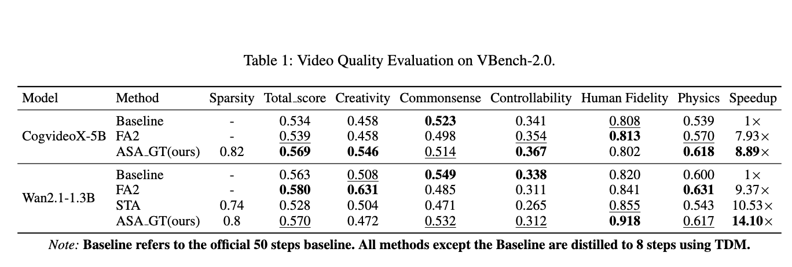

Performance on VBench-2.0

Comparison with state-of-the-art methods on VBench-2.0. BLADE achieves superior quality while maintaining significant speedup across different video generation models.
Speed vs Quality Trade-off

BLADE achieves the best trade-off between generation speed and video quality, outperforming existing acceleration methods.